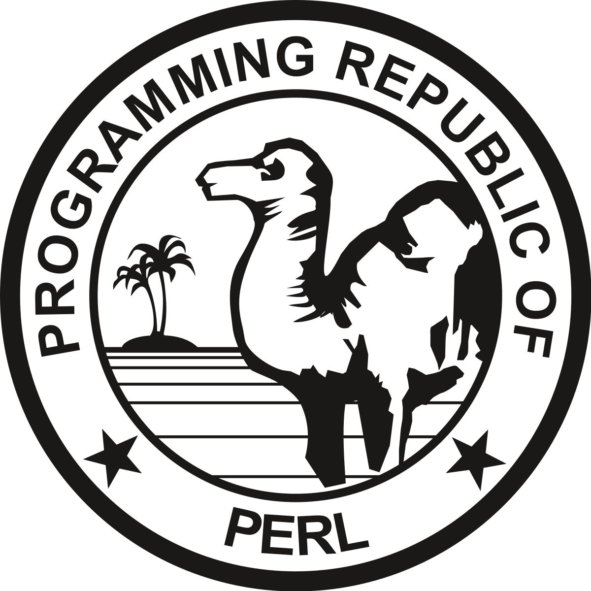
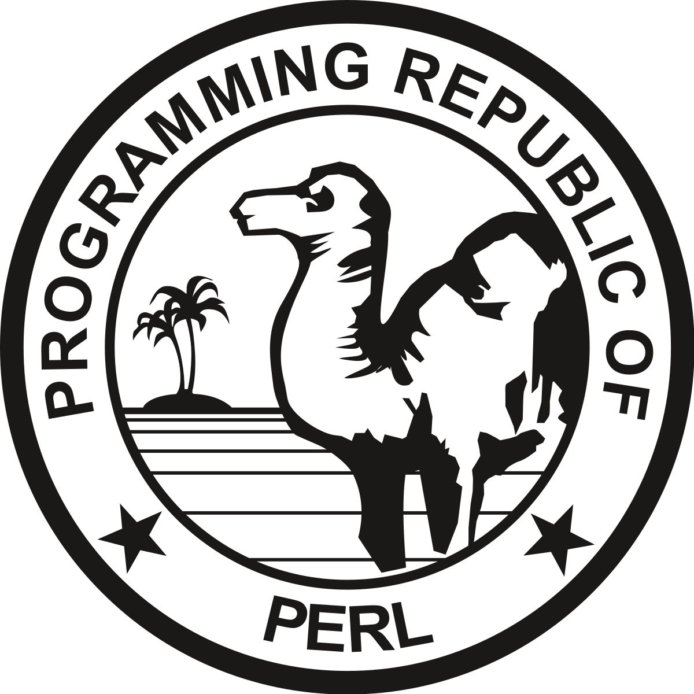

Dylan Zapzalka
1406 Oak St. · Brainerd, MN 56401 · (218) 839-7433 ·
dylanjameszapzalka@hotmail.com
A software engineer specializing in machine learning.
A software engineer specializing in machine learning.
GPA: 4.0
GPA: 4.0
Helped develop and maintain the Veritas's NetBackup — a data backup and recovery application. Gained experience developing, deploying, and maintaining large scale applications.
Developed a novel method of generating adversarial examples for software binary detection. Worked with Graph Neural Networks and used tools such as Tensorflow and Pytorch to implement various models for software binary classification.
Worked with an agile team to develop new features, fix bugs, and implement security features for their internal credential management system. Utilized languages such as Java, JavaScript, and SQL.
Led students in learning college-level algebra, trigonometry, and pre-calculus. Graded homework and proctored exams.


 



Breif explanation here...
Apart from being a web developer, I enjoy most of my time being outdoors. In the winter, I am an avid skier and novice ice climber. During the warmer months here in Colorado, I enjoy mountain biking, free climbing, and kayaking.
When forced indoors, I follow a number of sci-fi and fantasy genre movies and television shows, I am an aspiring chef, and I spend a large amount of my free time exploring the latest technology advancements in the front-end web development world.